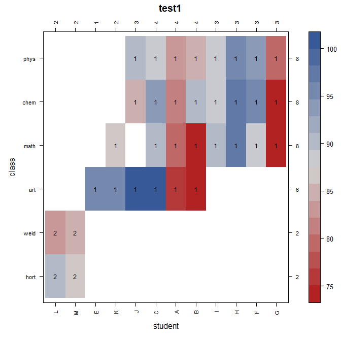
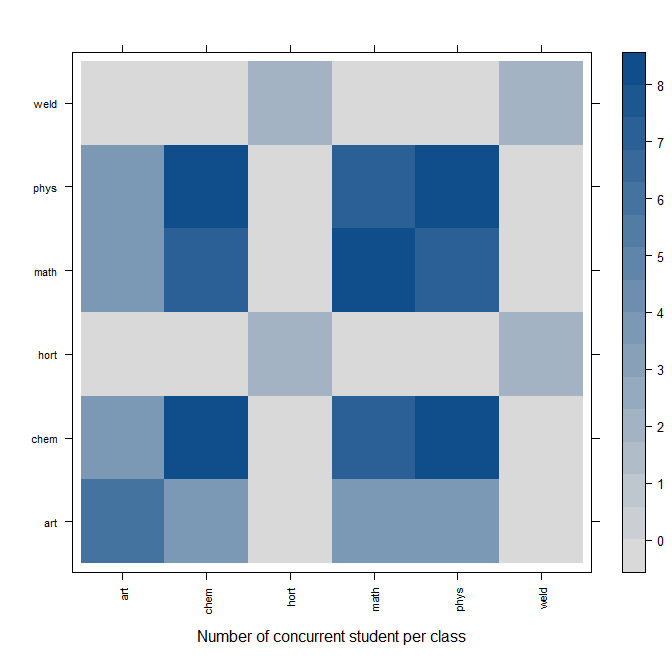

Homepage: https://kwstat.github.io/connected
Repository: https://github.com/kwstat/connected
Tools to visualize and improve connectedness of factors in data
Key features
Consistent function design:
- con_check(data, y ~ A + B) - Identify connected groups of factors.
- con_concur(data, y ~ A / B) - Plot concurrence matrix of two factors.
- con_filter(data, y ~ 2 * A / B) - Perform 2-factor filtering of data. Provide verbose output (similar to tidylog package).
- con_view(data, y ~ A + B) - View 2-way heatmap of factors, identify connected groups.
If there are missing values in the response variable y, the observations with missing values are deleted.
Installation
# Install the released version from CRAN:
install.packages("connected")
# Install the development version from GitHub:
install.packages("devtools")
devtools::install_github("kwstat/connected")Usage
- Check connectedness of multiple factors in a dataframe:
library(connected)
# The 'class' and 'student' factors are disconnected in 2 groups
R> con_check(data_student, test1 ~ class + student)
# [1] 1 1 1 1 1 1 1 1 1 1 1 1 1 1 1 1 1 1 1 1 1 1 1 1 1 1 1 1 1 1 1 2 2 2 2- Visualize connectedness of two factors. The cells with “1” and the cells with “2” are two disjoint groups.
library(connected)
con_view(data_student, test1~student*class, main="test1", xlab="student", ylab="class")

data_student
- Improve connectedness of two factors with two-way filtering
library(connected)
library(janitor) # For tabyl
data_student |>
tabyl(student,class)
# student art chem hort math phys weld
# A 1 1 0 1 1 0
# B 2 1 0 1 1 0
# C 1 1 0 1 1 0
# D 1 1 0 1 1 0
# E 1 0 0 0 0 0
# F 0 1 0 1 1 0
# G 0 1 0 1 1 0
# H 0 1 0 1 1 0
# I 0 1 0 1 1 0
# J 1 1 0 0 1 0
# K 1 1 0 1 1 0
# L 0 0 1 0 0 1
# M 0 0 1 0 0 1
con_filter(data_student, test1 ~ 7*student/class) |>
tabyl(student,class)
# Dropping these 3 of 6 levels of class:
# [1] "art" "hort" "weld"
# Deleted 11 of 35 rows of data.
# student chem math phys
# A 1 1 1
# B 1 1 1
# C 1 1 1
# F 1 1 1
# G 1 1 1
# H 1 1 1
# I 1 1 1
# J 1 0 1
# K 0 1 0
# Warning message:
# In con_filter(data_student, test1 ~ 7 * student/class) :
# Some student have only 1 class.- View a concurrence matrix of two factors
# Number of concurrent students for each pair of classes
con_concur(data_student, test1 ~ student/ class)

data_student